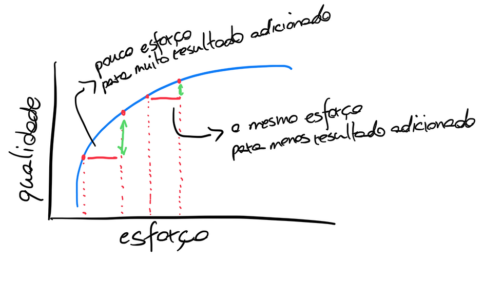
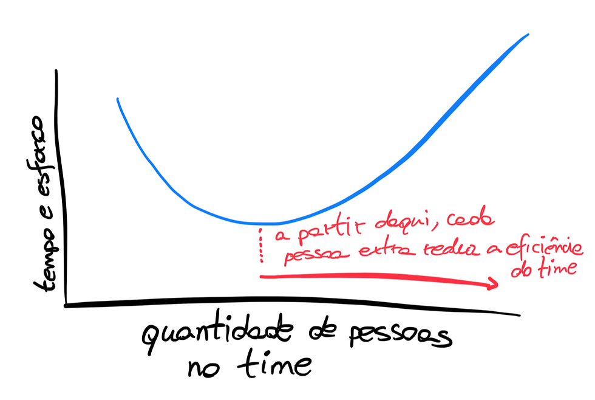
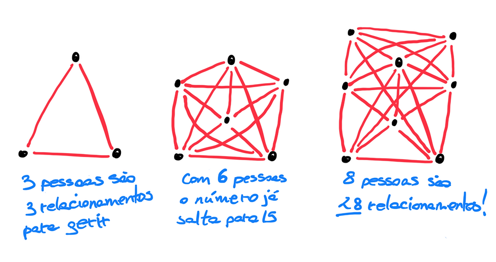
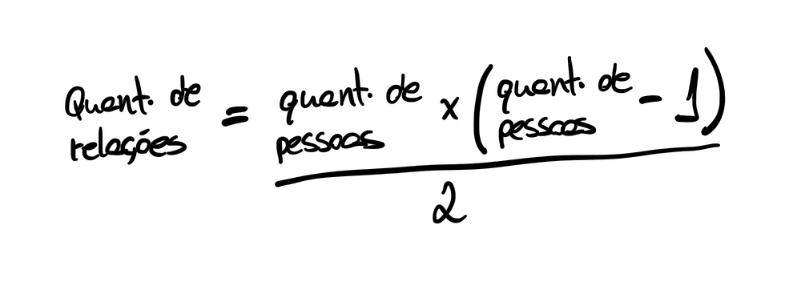
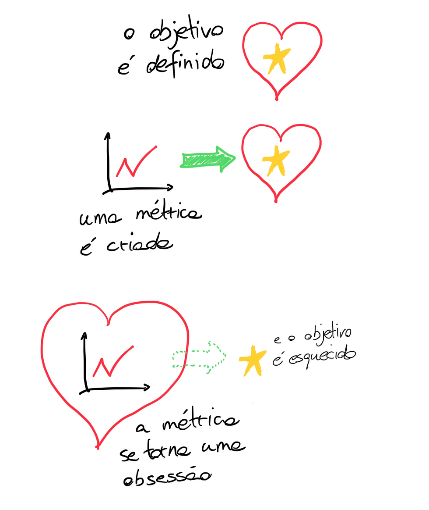
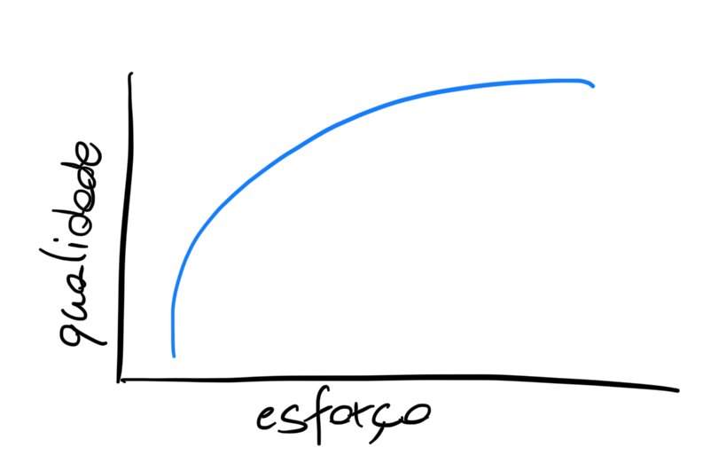
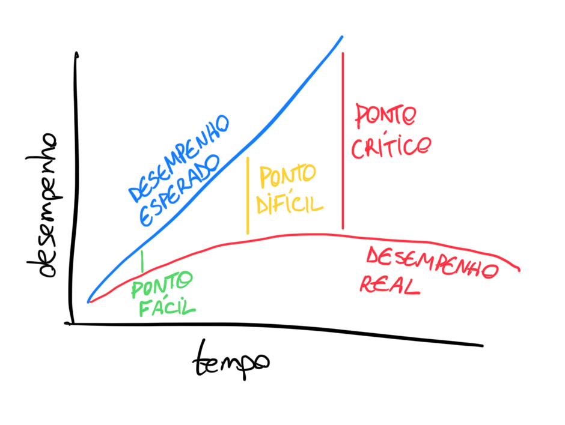

A Física da Produtividade - Parte 2
2023-10-31

Essa é a continuação da série A Física da Produtividade. Leia a Parte 1 aqui .
Um dos motivos da demora em publicar a parte 2 foi a dificuldade de escolher quais leis e efeitos mais valeriam a pena ser citados. Mais do que um desafio de escolha, essa enorme quantidade de material também me fez parar para pensar o quanto nós somos um bicho muito pouco consciente de si, apesar de acharmos que fazemos isso melhor que qualquer outro ser vivo.
O maior exemplo de todos é o fato de que a economia moderna inteira se sustenta no fato de que somos não só completamente racionais como também não influenciáveis . Ou seja, as principais decisões que afetam a sua vida se baseiam na ideia de que nós não interagimos e que somos sempre racionais nas escolhas que fazemos. Cá entre nós, nem eu nem você e nem ninguém consegue ser sempre racional. Essa é a maior irracionalidade que existe.
Enfim, o ponto é que nós fazemos coisas. Acordamos e dormindo fazendo coisas. Na maior parte do tempo, estamos tentando fazer coisas produtivas, ou seja, que vão gerar algum valor para alguém (inclusive nós mesmos). Gerar valor é um termo muito amplo, mas que pode ser simplificado na ideia de que valor é tudo aquilo que ajuda alguém ou algo a atingir seus objetivos .
Quando fazemos coisas sozinhos, existe uma dinâmica. Quando fazemos em grupo, essa dinâmica tende a mudar. E é aqui que entra a quinta lei dessa série:
5. Lei de Brooks
Um time de três pessoas está sobrecarregado e as entregas estão atrasadas. Todo mundo está trabalhando no seu limite e com isso é dada a permissão de contratar mais gente. Na semana seguinte chegam mais duas pessoas e a sobrecarga parece ter sido aliviada com a redistribuição de tarefas. Dado que trazer gente fez efeito, mais três pessoas são contratadas. Agora o time tem oito membros. De repente, as reuniões ficaram longas demais. Muita pauta para pouco tempo. Dificuldade de tomar decisões, porque cada um quer que sua voz seja ouvida. Começam as intrigas e a insatisfação. Caos.
Fred Brooks foi um precursor da engenharia de software e publicou um estudo mostrando que quanto mais pessoas eram adicionadas a um projeto de software atrasado, mais ele se atrasava. Apesar do restrito escopo do seu estudo, não é absurdo extrapolar, em algum grau, essa ideia para outros tipos de equipes. Cada pessoa a mais torna o time mais produtivo até que um ponto de inflexão ocorre quando a próxima pessoa é contratada e a equipe passar a entregar menos.
Daí em diante, adicionar mais gente só vai tornar os custos maiores e os benefícios iguais ou piores. Esses custos, além dos financeiros, se apresentam na forma de custos de transação : os custos de gerenciar o trabalho de mais pessoas, de tentar cumprir as expectativas de mais pessoas e de tempo e energia da liderança do time para fazer tudo isso.

Para termos uma ideia do quanto isso pode se tornar complexo, é possível fazer contas simples sobre como interagimos. Quanto mais pessoas num grupo, maior a quantidade de relacionamentos criados. A questão é essa quantidade de relacionamentos cresce bem mais rápido que a quantidade de pessoas. Pense no exemplo da história do primeiro parágrafo:

[aviso: se você não se sente à vontade com matemática, pode pular o que vai vir a seguir]
A partir da observação de como a quantidade de relacionamentos cresce a medida que mais pessoas são adicionadas, podemos chegar à seguinte fórmula:

Onde R é a quantidade de relações e n é a quantidade de pessoas. Uma forma mais fácil de entender é:

Por inferência própria ou a partir da derivada dessa fórmula, é possível encontrar a complexidade marginal que cada pessoa adiciona ao grupo:
R’ = n
Ou seja, cada pessoa adiciona ao grupo a quantidade de relações igual à ordem que entrou (ex: a décima pessoa a entrar adiciona mais 10 relações ao grupo).
[fim da matemática]
Essa complexidade toda pode ser gerenciada, de fato. A questão da Lei de Brooks é a atenção para qual a quantidade ideal de pessoas numa equipe. Às vezes, o problema não está nisso. Um time pode estar sobrecarregado porque há retrabalho, porque não há sistematização alguma das tarefas e entregas ou simplesmente porque a cultura da empresa vangloria a sobrecarga em si.
Seja para uma equipe de desenvolvimento de software ou o comitê que vai organizar a festa de final de ano da firma, é importante estabelecer limites de quantas pessoas tornam o time ótimo .
6. Lei de Goodheart
Supostamente, durante o período colonial britânico na Índia, os ingleses estavam preocupados com a quantidade de cobras venenosas em Delhi. Para resolver o problema, eles ofereceram uma recompensa por cada cobra morta.
No começo, a iniciativa parecia um sucesso, com um grande número de cobras sendo mortas pela recompensa. O que ocorre é que, algumas pessoas começaram a criar cobras para ganhar mais dinheiro. Quando o governo descobriu o esquema, cancelaram o programa, o que fez os criadores das cobras soltá-las na ruas, o que resultou em mais cobras na cidade do que haviam antes dessa iniciativa.
Deixando a violenta colonização à parte por um momento, essa história pode servir de exemplo para várias iniciativas, seja dentro de empresas ou em políticas públicas. O economista Charles Goodheart percebeu que o foco em estatísticas fazia com que políticas públicas fossem criadas para mudar as estatísticas, não a realidade que elas buscavam mensurar. Isso deu origem à Lei de Goodheart com o seguinte postulado:
"Quando uma métrica se torna o objetivo, ela deixa de ser uma boa métrica."
À primeira lida, essa frase pode não fazer sentido. Se colocamos todo o foco na métrica, isso não colabora com o objetivo? Não necessariamente e por alguns motivos:
Quando o objetivo possui outros fatores que o influenciam além da métrica escolhida. Se pessoas capacitadas passaram por muitas horas de treinamento, você poderia imagina que horas de treinamento geram mais capacitação. Porém, capacitação envolve outros elementos como a qualidade dos treinamentos, predisposição para aprendizado ou o conteúdo do treinamento em si.
Quanto a métrica ajuda a medir o alcance do objetivo apenas em condições específicas. Antigamente o sucesso de um músico ou uma banda era medido pela quantidade de álbuns vendidos. Desde que surgiu a possibilidade de escutar músicas específicas de um álbum por meio do Spotify ou outro aplicativo do tipo, não há muita razão para comprar álbuns. Ainda assim, a indústria fonográfica demorou a aceitar isso e algumas gravadoras continuam tendo essa métrica como a principal.
Quando se confunde correlação com causalidade. Você pode descobrir que pessoas usando óculos escuros consomem mais sorvete, mas oferecer óculos escuros às pessoas não vai fazer elas comprar mais, porque tanto dos óculos quanto o consumo de sorvete são influenciadas por um terceiro fator (se o dia está ensolarado ou não).
Quanto a métrica escolhida gera o oposto do objetivo desejado. O exemplo das cobras na Índia ilustra isso bem.

O mais interessante da Lei de Goodheart é que ela se aplica em diversos contextos e amplitudes. Uma discussão que ela gera, por exemplo, é se o PIB é a melhor forma de medir o desenvolvimento de um país. Muito provavelmente não, porque existem países com PIBs altos que ainda assim têm altos índices de pobreza ou de poluição e degradação ambiental. Ter apenas o crescimento do PIB como a métrica mais importante de um país acaba gerando uma busca incessante por dinheiro em detrimento de outros aspectos fundamentais para a sociedade e para cada indivíduo.
Quando nos deparamos com essa situação, uma alternativa é criar uma métrica restritiva , que é uma segunda métrica que busca assegurar que a primeira não age sozinha. Apesar de imperfeita, essa pode ser uma solução eficaz. Se uma empresa de telemarketing quer reduzir o tempo médio de atendimento, ela pode combinar essa métrica com a satisfação dos clientes para que os atendentes não sejam estimulados a tornar as ligações rápidas em detrimento da qualidade, por exemplo.
O ponto aqui, no entanto, é muito mais evolutivo do que estático. Métricas sempre serão imperfeitas, o que não significa que são inúteis. Porém elas costumam influenciar os comportamentos, então o importante é manter em perspectiva o que realmente importa e não se deixar levar por números e gráficos crescentes apenas. Uma das melhores formas de averiguar isso é se perguntando com alguma frequência se você se lembra do propósito da tarefa em questão, independente do seu tamanho e impacto.
7. ‘Satisficing’ ou satisfação suficiente
Quanto dinheiro eu precisaria te oferecer agora para você parar de trabalhar (supondo que você queira parar de trabalhar)? Um milhão? Dez milhões? 100 milhões?
Digamos que a sua resposta seja dez milhões. Se eu te oferecer dois, você aceita? Não? E se eu oferecer 9,3 milhões? Imagino que você dificilmente recusaria.
Isso porque, em determinado ponto, nossa satisfação não vai aumentar na mesma proporção do quanto adicionamos. Quando você está com fome e come uma fatia de pizza, ela é maravilhosa. A segunda fatia ainda é muito boa. A terceira já começa a bater. Você até poderia comer uma quarta fatia, mas percebe que você não ficaria tão mais satisfeito assim na proporção do preço da fatia, certo? Para pessoas com distúrbios alimentares, pode ser que elas comam até passarem mal (mal mesmo, não você no rodízio de sushi). Elas não conseguem sentir satisfação suficiente.
Ficar suficientemente satisfeito é um fenômeno chamado satisficing que em inglês e a combinação de satisfying (satisfatório) com sufficing (suficiente). Normalmente, nossa relação entre a satisfação com algo e o esforço (ex: dinheiro, tempo, energia, etc) é mais ou menos assim:

Se analisarmos com cuidado, vamos perceber que, a medida em que vamos conseguindo mais do que queremos, o mesmo esforço não necessariamente vai trazer a mesma satisfação:
Na economia, o nome que se dá a isso são ganhos marginais decrescentes .
Como isso se aplica à produtividade? Se para conseguir entregar um bom trabalho no final do dia (digamos que ele teria uma nota 9,5), eu deveria desligar o computador e ir fazer outra coisa? Ou será que eu quero de qualquer jeito entregar um trabalho nota 10 mesmo que isso envolva mais 5 horas de trabalho além das 8 que já trabalhei hoje? O que essa lei nos recomenda é simples: desligue o computador e vá fazer outra coisa que também tenha importância para você, porque simplesmente não vale a pena.
OPA. Mas se fosse assim, não teríamos atletas de ponta. Se o Usain Bolt se contentasse com ter corrido 100 metros em 9,72 segundos ele não teria se esforçado para chegar em 9,58 segundos. Sai pra lá com essa lei preguiçosa, você deve estar pensando. O que não conseguimos ver de imediato é que ele não está se esforçando para reduzir a marca em 0,14 segundos. Ele estava se esforçando em quebrar um recorde mundial. Pela terceira vez seguida. Talvez o Bolt via quebrar recordes da mesma forma que você encarou as fatias de pizza. Até três está valendo a pena. Tanto é que ele se aposentou com 32 anos.
O ponto aqui é saber diferenciar obstinação de obsessão . Por mais parecidas que essas palavras soem, ela tem uma característica específica que as diferencia: clareza de propósito . Se, para o seu objetivo, o esforço marginal vale a pena, você tem mais é que fazê-lo. O problema é que a obsessão tenta nos cercar a cada minuto e não percebemos.
Talvez você esteja trabalhando para além dos seus objetivos. Talvez você perceba que a satisfação que você quer, você já tem. Passar do ponto pode custar muito caro, porque se no começo tudo o que eu preciso para trabalhar bem é sono, disposição física e alimentação, mais para a frente pode começar a custar também minha saúde, minha felicidade e o significado da vida em última instância.
8. Ponto Fácil
Em 28 de janeiro de 1986, o ônibus espacial Challenger explodiu no ar 73 segundos após seu lançamento, matando todos os sete integrantes da tripulação. Após toda a investigação, descobriu-se que o motivo da explosão foi a falha em uma vedação estragada que vazou e criou uma pressão suficiente para desintegrar a nave.
O que se veio a descobrir a seguir só tornou o episódio ainda mais trágico: foi um acidente completamente evitável.

Engenheiros da NASA responsáveis pelo Challenger haviam percebido que havia um risco de que mudanças de temperatura no dia do lançamento pudessem comprometer a vedação. Reportaram essa informação para o chefe deles, que reportou para o chefe dele. Que resolveu não contar a mais ninguém. Após anos de desenvolvimento, milhões de dólares investidos e toda uma expectativa do governos dos EUA com o lançamento, falar que não seria possível lançar o Challenger seria um banho de água fria. Afinal, quem gosta trazer más notícias que vão desagradar o chefe?
Na Conversant , empresa onde atuo como consultor global, foi criado um modelo para que situações como essas não aconteçam. Dado que o nosso trabalho é melhorar resultados de um time por meio da evolução da qualidade das conversas, foi criado o Point Easy (ou Ponto Fácil), que funciona como representado abaixo:

Líderes têm a responsabilidade de garantir que suas equipes alcancem seus objetivos. Parte disso envolve ter conversas no momento certo, especialmente quando se observa que o desempenho está desviando do esperado. A questão é que notícias ruins normalmente não melhoram com o tempo . Portanto, quanto mais uma conversa necessária é adiada, mais complicada a situação pode se tornar.
Endereçar um problema quando ele ainda está no ponto fácil (em que expectativa e realidade não estão tão descoladas uma da outra ainda) pode parecer desafiador no começo, mas pode fazer com que os níveis de confiança e colaboração aumentem. A medida que essa conversa não acontece, o problema pode ir aumentando até chegar no ponto crise, onde a conversa pode ser muito mais do tipo “por que isso aconteceu?” do que “o que podemos fazer para ajustar a rota?”
Se isso tivesse sido considerado pela NASA, talvez os tripulantes do Challenger estivessem vivos até hoje contando histórias sobre a ida para o espaço.
Da mesma forma, todos nós temos problemas que só crescem porque escolhemos não falar sobre eles. Isso pode se aplicar a qualquer dimensão da vida e a produtividade em jogo, aqui, é a qualidade da vida que criamos para nós mesmos.
Com essa última lei, encerro aqui a série sobre a física da produtividade. Como disse no começo da primeira parte, não é sobre fazermos mais e mais coisas. É sobre conseguirmos fazer as coisas utilizando os recursos que temos a disposição de tal forma que nenhuma aérea da vida fique desatendida. Não há produção que resolva o excesso de trabalho que não te permite estar com quem você ama. Não há produção que faça com que você crie amor próprio atribuindo seu valor apenas ao que você tem como profissão.
Fazer coisas é muito bom. Viver coisas é muito melhor.